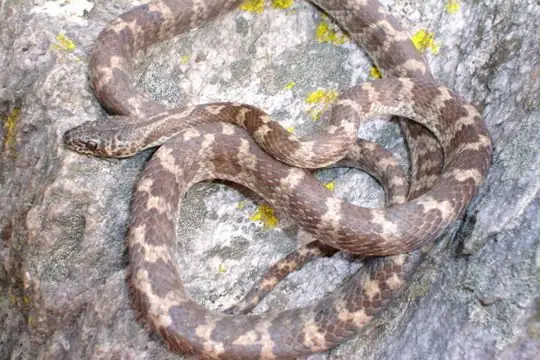
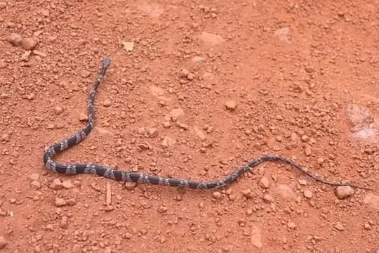
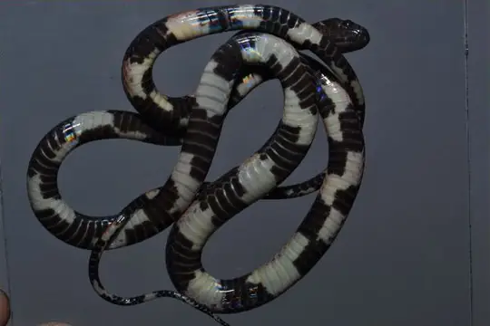
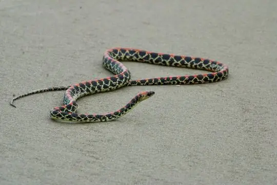

Siphlophis
The genus Siphlophis (family Colubridae) has 7 species in SnakeList (none venomous), recorded in 12 countries.
- 7species
- 7non-venomous
- 12countries
About the genus
A genus of the family Colubridae (colubrids).
Species
Showing 7 species

Brazilian Spotted Night SnakeSiphlophis longicaudatus
Common Spotted Night SnakeSiphlophis leucocephalus
Devil's Head Spotted Night SnakeSiphlophis ayauma
Guanabara Spotted Night SnakeSiphlophis pulcher Panama Spotted Night SnakeSiphlophis cervinus
Panama Spotted Night SnakeSiphlophis cervinus Tropical Flat SnakeSiphlophis compressus
Tropical Flat SnakeSiphlophis compressus Worontzow's Spotted Night SnakeSiphlophis worontzowi
Worontzow's Spotted Night SnakeSiphlophis worontzowi
No snakes in Siphlophis match.
About the genus Siphlophis
- Family: Colubridae.
- Recorded in: Bolivia, Brazil, Colombia, Costa Rica, Ecuador, French Guiana, Guyana, Panama, Peru, Suriname, Trinidad and Tobago, Venezuela.